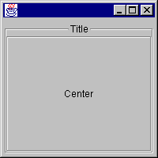
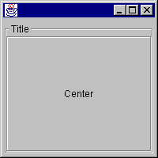
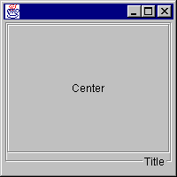

org.zaval.lw
Class LwBorderPan
java.lang.Object
|
+--org.zaval.util.ValidationObject
|
+--org.zaval.lw.LwCanvas
|
+--org.zaval.lw.LwPanel
|
+--org.zaval.lw.LwBorderPan
- All Implemented Interfaces:
- Drawable, Layoutable, LayoutContainer, LwComponent, LwContainer, LwLayout, LwTitleInfo, Validationable
- public class LwBorderPan
- extends LwPanel
- implements LwLayout, LwTitleInfo
This is lightweight component that can be used to organize border panel.
The panel can use any other lightweigt component as a title and the title
can be placed on the top or on the bottom of the container. The border panel
supports following alignment for the title: "left", "center", "right". The border panel
implements and uses own layout manager, so to add a component to the container it is
necessary to use one of the following constraints:
-
LwBorderPan.CENTER. The constraint is used to add a central component.
-
LwBorderPan.TITLE. The constraint is used to add a title component.
The table below shows diffirent samples of the border panel usage:
| Source code |
Application image |
...
LwBorderPan bp = new LwBorderPan();
bp.setXAlignment(Alignment.CENTER);
bp.add(LwBorderPan.TITLE, new LwLabel("Title"));
bp.add(LwBorderPan.CENTER, new LwLabel("Center"));
...
|

|
...
LwBorderPan bp = new LwBorderPan();
bp.setXAlignment(Alignment.LEFT);
bp.add(LwBorderPan.TITLE, new LwLabel("Title"));
bp.add(LwBorderPan.CENTER, new LwLabel("Center"));
...
|

|
...
LwBorderPan bp = new LwBorderPan();
bp.setXAlignment(Alignment.RIGHT);
bp.setTitleAlignment(Alignment.BOTTOM);
bp.add(LwBorderPan.TITLE, new LwLabel("Title"));
bp.add(LwBorderPan.CENTER, new LwLabel("Center"));
...
|

|
|
Field Summary |
static java.lang.Object |
CENTER
The center layout constraint (it is used to add a central component). |
static java.lang.Object |
TITLE
The title layout constraint (it is used to add a title component). |
|
Method Summary |
java.awt.Dimension |
calcPreferredSize(LayoutContainer target)
The method computes a preferred size for the specified target component. |
void |
componentAdded(java.lang.Object id,
Layoutable lw,
int index)
The method is called if a component has been added to the owner
layoutable container. |
void |
componentRemoved(Layoutable lw,
int index)
The method is called if a component has been removed from the owner
layoutable container. |
protected LwLayout |
getDefaultLayout()
Overrides parent method to define default layout. |
int |
getTitleAlignment()
Gets the vertical alignment of the title component. |
java.awt.Rectangle |
getTitleBounds()
Gets the rectangle where the title component has been placed with the border panel. |
void |
layout(LayoutContainer target)
The method is an implementation of appropriate layout manager method. |
void |
setTitleAlignment(int a)
Sets the specified vertical alignment for the title of the border panel. |
void |
setXAlignment(int a)
Sets the specified horizontal alignment for the title of the border panel. |
| Methods inherited from class org.zaval.lw.LwPanel |
add, add, calcPreferredSize, count, get, getLayoutOffset, getLwComponentAt, getLwLayout, indexOf, insert, insert, invalidate, paintOnTop, recalc, remove, remove, removeAll, setBackground, setLwLayout, setOpaque, toFront, updateCashedPs |
| Methods inherited from class org.zaval.lw.LwCanvas |
canHaveFocus, getBackground, getBounds, getHeight, getInsets, getLocation, getLwParent, getOrigin, getPreferredSize, getSize, getViewMan, getVisiblePart, getWidth, getX, getY, hasFocus, isEnabled, isOpaque, isVisible, paint, repaint, repaint, requestFocus, setEnabled, setInsets, setLocation, setLwParent, setPSSize, setSize, setViewMan, setVisible, toString, update, validate, viewManChanged, vrp |
| Methods inherited from class java.lang.Object |
clone, equals, finalize, getClass, hashCode, notify, notifyAll, wait, wait, wait |
| Methods inherited from interface org.zaval.lw.Layoutable |
getBounds, getHeight, getInsets, getLocation, getPreferredSize, getSize, getWidth, getX, getY, isVisible, setLocation, setSize |
CENTER
public static final java.lang.Object CENTER
- The center layout constraint (it is used to add a central component).
TITLE
public static final java.lang.Object TITLE
- The title layout constraint (it is used to add a title component).
LwBorderPan
public LwBorderPan()
- Constructs a new border panel.
LwBorderPan
public LwBorderPan(LwComponent title,
LwComponent center)
- Constructs a new border panel with the specified title component and center component.
In this case the title and the center components will be added to the border panel
automatically
- Parameters:
titlecenter
componentAdded
public void componentAdded(java.lang.Object id,
Layoutable lw,
int index)
- The method is called if a component has been added to the owner
layoutable container. The implementation performs IllegalArgumentException
if the constraint is not defined or doesn't equal LwBorderPan.TITLE or
LwBorderPan.CENTER constant.
- Specified by:
componentAdded in interface LwLayout
- Parameters:
idlwindex
componentRemoved
public void componentRemoved(Layoutable lw,
int index)
- The method is called if a component has been removed from the owner
layoutable container.
- Specified by:
componentRemoved in interface LwLayout
- Parameters:
lwindex
calcPreferredSize
public java.awt.Dimension calcPreferredSize(LayoutContainer target)
- The method computes a preferred size for the specified target component.
- Specified by:
calcPreferredSize in interface LwLayout
- Parameters:
target
layout
public void layout(LayoutContainer target)
- The method is an implementation of appropriate layout manager method.
The method performs layouting of the child layoutable components for the specified
target component.
- Specified by:
layout in interface LwLayout
- Parameters:
target
getDefaultLayout
protected LwLayout getDefaultLayout()
- Overrides parent method to define default layout. The component returns itself
as the default layout manager.
- Overrides:
getDefaultLayout in class LwPanel
- Returns:
- the default layout manager.
getTitleBounds
public java.awt.Rectangle getTitleBounds()
- Gets the rectangle where the title component has been placed with the border panel.
- Specified by:
getTitleBounds in interface LwTitleInfo
- Returns:
- a rectangle where the the title component has been placed.
setTitleAlignment
public void setTitleAlignment(int a)
- Sets the specified vertical alignment for the title of the border panel. The border panel
supports Alignment.TOP and Alignment.BOTTOM values for the alignment, otherwise
IllegalArgumentException will be thrown.
- Parameters:
a
setXAlignment
public void setXAlignment(int a)
- Sets the specified horizontal alignment for the title of the border panel. The border panel
supports Alignment.LEFT, Alignment.RIGHT and Alignment.CENTER values for the alignment,
otherwise IllegalArgumentException will be thrown.
- Parameters:
a
getTitleAlignment
public int getTitleAlignment()
- Gets the vertical alignment of the title component.
- Specified by:
getTitleAlignment in interface LwTitleInfo
- Returns:
- a vertical alignment.
Copyright © Zaval Creative Engineering Group, 2000-2003.
http://www.zaval.org